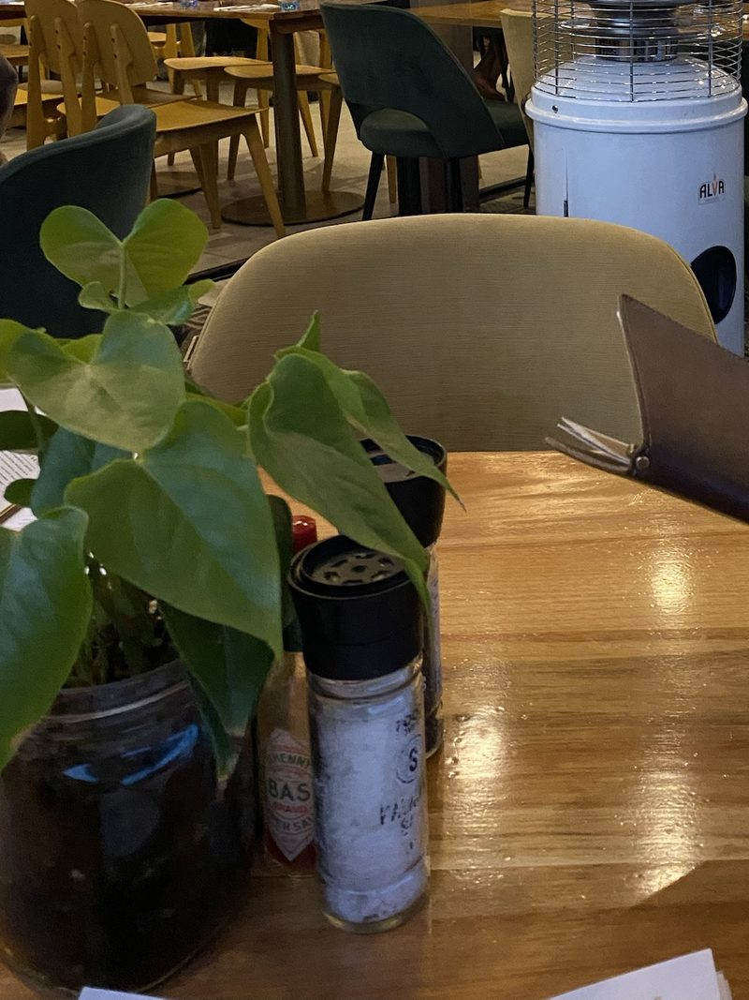

About Us
A name that carries a family's story.
Our History
1947 on Vilakazi Street was founded in 2021 by Naomi Lele Ratsheko. The name honours 1947 — the birth year of both her parents — carrying their memory into every part of the restaurant, from the menu to the wine list.
We sit at 7156 Vilakazi Street in Orlando West, Soweto: the only street in the world that has been home to two Nobel Peace Prize laureates, Nelson Mandela and Archbishop Desmond Tutu. Every day, our doors open onto a street that carries some of South Africa's most important history.
What started as a vision to bring refined dining to Vilakazi Street has grown into a destination for locals celebrating milestones and travellers discovering Soweto for the first time.

Mission
Why we do this.
To offer an elevated South African dining experience rooted in Soweto's heritage, hospitality, and sense of community — serving locals and heritage tourists alike with the same warmth.
Vision
Where we're headed.
To be recognised as a leading dining and heritage-tourism destination on Vilakazi Street — pairing authentic South African flavours with a refined, memorable experience for every guest.
Our Team
The people behind the table.
Naomi Lele Ratsheko
Founder & Owner
Jan Winsent
Head Chef — seasonal, sustainable, distinctly South African menus.
Lerato
Sommelier & Front of House — guides our wine tastings and cellar experiences.